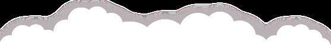
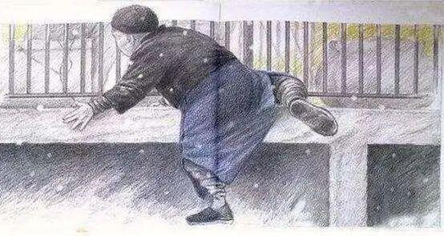
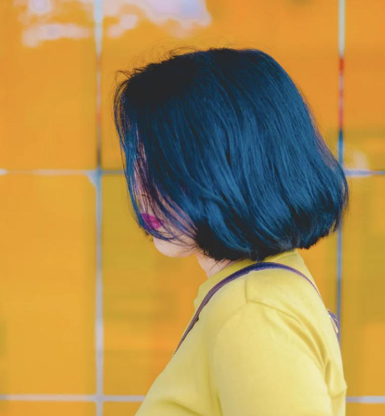

祝愿所有的父亲，节日快乐！


MY
白布局，
A

白布局，
IS MY HERO

HAPPY FATHER'S DAY
别人常说：如果有个男人喜欢你素颜不化妆，你瘦了他心疼，你胖了他高兴......
那他一定是你爸，只有你爸。

以前的父亲
是去买橘子时的背影
“你站在这里别动，我去买几个橘子”

是在摇曳的小船上
抓紧为远行的儿子缝补被褥
而现在的父亲
可能是这个样子

我
亲爱的爸爸~
又没钱了？要多少 记得别跟你妈说

父亲大人

我
爸，我妈今天中午有事，让你做饭呢
哦，家里还有方便面

父亲大人

我
爸快下来帮我拿快递 拿不动了
白吃那么多大米饭了 ，等着吧
父亲大人
但是不管父亲的形象如何改变
父亲对我们的爱是永远不会改变的

在今天这个特殊的日子里
那些说不出口的情话
就用行动来表达吧！
勇敢点
让我们用最真挚的行动
换取父亲脸上最灿烂的笑容
祝愿所有的父亲，节日快乐！
排版|辛学敏
图片|网络
想了解更多资讯，请关注我们~